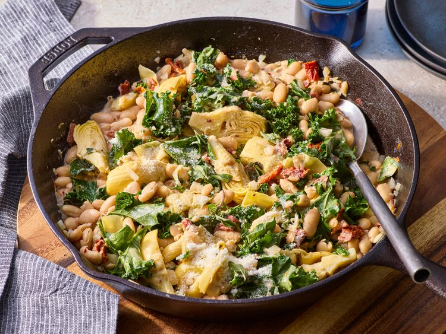

Back
Creamy Tuscan White Bean Skillet

This creamy Tuscan white bean skillet is a flavorful dish featuring tender beans, artichoke hearts, and bright sun-dried tomatoes coated in a creamy sauce with Parmesan cheese. A vegetarian-friendly main dish or side, it has the feel of comfort food, elevated beyond simple beans.
Ingredients:
-
1 tablespoon olive oil
-
1/2 cup chopped onion
-
2 cloves garlic, minced
-
2 (15 ounce) cans cannellini beans, rinsed and drained
-
1 (14.5 ounce) can artichoke hearts, drained
-
1/2 cup oil-packed sun-dried tomatoes, chopped
....
Steps
-
Gather all ingredients.
-
Heat oil in a very large skillet over medium heat. Add onion; cook until softened, about 4 minutes.
-
Add beans, artichoke hearts, sun-dried tomatoes, oregano, crushed red pepper, black pepper, and salt to the skillet; stir to combine.
-
Pour in broth and cream; bring to a simmer and cook until lightly thickened, stirring occasionally, 5 minutes.
-
Add kale and reduce heat to low. Cook until kale begins to soften, stirring often, 2 to 3 minutes longer. Remove from the heat.
...